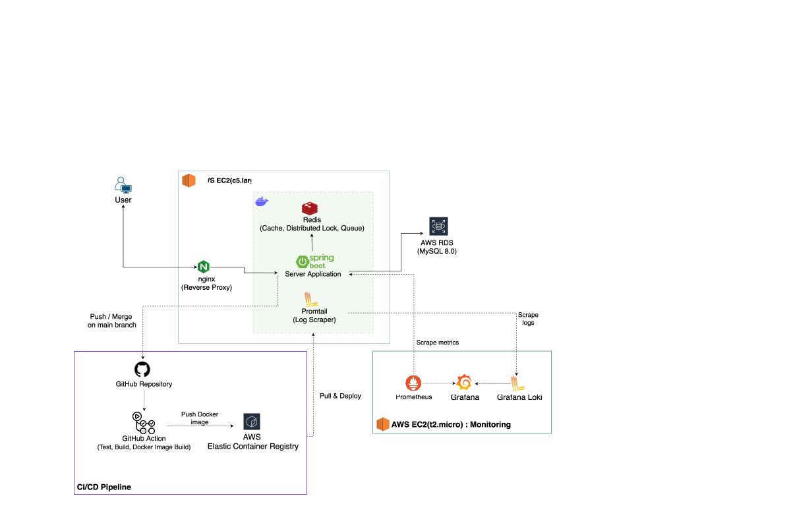

개인 프로젝트 · 2025.01 — 현재 Personal Project · Jan 2025 — Present
SLAM!
공연 좌석을 예약할 수 있는 기능을 제공하는 서비스입니다. 좌석 선점에 대한 동시성 제어가 요구되며, 선점한 좌석에 대한 결제는 충전된 포인트를 차감하는 것으로 실현됩니다. A concert seat reservation system with concurrency control for seat preemption. Payments are processed by deducting pre-charged points.
−66%
P99 Latency
1.04s → 355ms
+54%
Throughput
813 → 1.25K RPS
−76%
요청당 DB 커맨드 DB Commands / Request
−64%
스토리지 절감 Storage Reduction
프로젝트 아키텍처 Project Architecture

- 단일 서버 환경에서 도메인 분리의 이점은 취하되, 네트워크 오버헤드와 운영 복잡도를 줄이기 위해 모듈러 모놀리식 채택 Adopted modular monolith to gain domain separation benefits while reducing network overhead and operational complexity in a single-server environment
- 부하 테스트 및 운영 시 모니터링이 메인 서버 성능에 영향을 주지 않도록 별도 인스턴스로 분리 Separated monitoring into a dedicated instance to prevent load testing and observability from impacting the main server
- 도메인 간 직접 의존을 제거하고, 모듈 추가/변경 시 영향 범위를 최소화하기 위해 ApplicationEvent 기반 통신 적용 Adopted ApplicationEvent-based communication to eliminate direct cross-domain dependencies and minimize blast radius for module changes
01
애플리케이션 병목 식별, 원인 분석, 해결을 통한 P99 Latency 66% 개선 및 처리량 54% 향상 P99 Latency −66% & Throughput +54% via Application Bottleneck Diagnosis and Resolution
Grafana 관측 기반 진단 및 병목 원인 가설 수립 → JDK Flight Recorder (JFR) & 스레드 덤프 활용 세부 분석 통한 가설 검증 및 원인 분석 → 개선 Grafana-based observation and hypothesis formulation → JFR & thread dump analysis for validation → resolution
실험 환경 Test Environment
AWS c5.large (2 vCPU, 4GB RAM) · G1GC · HikariCP Max 10 · JVM Heap Xms 256MB, Xmx 512MB
문제 정의 Problem Definition
813 RPS 지점에서 Tail Latency 급증 및 스레드 적체 식별 → 병목 원인 파악 및 해결 가능성 검토 위해 분석 시작. Identified tail latency spike and thread congestion at 813 RPS — initiated analysis to diagnose root cause and evaluate resolution options.
병목 구간 주요 지표 별 수치 및 변화율 Key Metrics at Bottleneck Interval
| 지표Metric | 01:14:15 | 01:14:30 | 변화율Change |
|---|---|---|---|
| RPS | 798 | 813 | +1.87% |
| P99 Latency | 48.5 ms | 1.04 s | +2,044% |
| HikariCP Pending 스레드Threads | 0 | 189 | 신규 발생New |
| HikariCP Avg. Acq Time | 1.21 ms | 132 ms | +10,809% |
| GC Pause 지난 1분 합계Last 1m Total | 308 ms | 1.25 s | +305% |
| HikariCP Avg. Usg Time | 2.25 ms | 4.32 ms | 소폭 상승Slight rise |
| GC Count (1m) | 60회60 | 80회80 | +33% |
병목 원인에 대한 가설 수립 및 평가 Hypothesis Formulation and Evaluation
| 인과 가설Hypothesis | 검토 근거Evidence | 설명력Explanatory Power | 우선순위Priority |
|---|---|---|---|
| A. STW Duration 증가Increase | GC 빈도 증가 & 분당 STW Pause 합계 증가 → 고부하 상황 시 병목 야기 가능 Increased GC frequency & rising per-minute STW pause total → potential bottleneck under high load | 높음High | 1 |
| B. CPU 포화Saturation | 문제 지점 System CPU 90% → CPU 경합으로 인한 병목 가능 System CPU at 90% → possible CPU contention bottleneck | 중간Medium | 2 |
| C. 커넥션 풀 부족Connection Pool Shortage | Little's Law 계산 상 1K RPS 처리 시 필요 커넥션 4.32개 < 현행 풀 최대 10개 Little's Law: 4.32 connections needed at 1K RPS < pool max of 10 | 낮음Low | 3 |
| D. DB 병목Bottleneck | 커넥션 Usage Time 평균이 일정 & Acquire Time만 증가 → 가능성이 낮다고 판단 Stable avg usage time & only acquire time spiking → unlikely cause | 낮음Low | 4 |
결론: Grafana 관측만으로는 가설 검증의 한계가 있음을 인지 → JVM 이벤트 시계열 분석을 통한 원인 파악 위해 JFR 프로파일링 수행 Conclusion: Recognized the limits of Grafana-only observation → conducted JFR profiling for JVM event time-series analysis
JFR 분석 결과에 근거한 시간순 병목 발생 과정 Chronological Bottleneck Progression Based on JFR Analysis
1. 높은 Allocation Rate 상황에서의 잦은 GC 포착 1. Frequent GC under High Allocation Rate
- 현상 식별: 당시 Heap Free Ratio (21%) < MinHeapFreeRatio (40%)에 따라 Committed 확장되어 Memory Pressure 정황 확인
- 세부 지표: 140MB/s 수준의 Eden Space 객체 할당, 잦은 GC 발생 (3초간 7회, 평균 Pause 32ms), 저부하 대비 7배 증가한 평균 STW
-
진단 결과:
Memory Pressure ➔ 잦은 GC & STW 길이 증가 ➔ 커넥션 반환 지연 ➔ 처리량 저하
- Observation: Heap Free Ratio (21%) < MinHeapFreeRatio (40%) triggered committed heap expansion, confirming memory pressure.
- Metrics: 140MB/s Eden allocation, 7 GCs in 3s (avg pause 32ms), and 7× increase in per-GC STW.
-
Diagnosis:
Memory Pressure ➔ Frequent GC & Longer STW ➔ HikariCP Return Delays ➔ Throughput Degradation
2. HikariCP 커넥션 대기 스레드 적체 발견 2. HikariCP Connection Wait Thread Congestion
- 현상 파악: 800 RPS 시점의 스레드 덤프 확인 결과, TransferQueue 내부에서 90개의 스레드가 Park 중임을 확인
- 판단 근거: 낮은 커넥션 Usage Time 평균 유지 및 일정한 추세
-
진단 결과:
"처리량 < 유입량" 상태 지속 ➔ TransferQueue 대기열 생성 ➔ 대기열 누적으로 인한 앱 레벨 병목
- Observation: Thread dump at 800 RPS revealed 90 threads parked in TransferQueue.
- Evidence: Connection usage time remained low and stable.
-
Diagnosis:
Throughput < Ingress Rate ➔ TransferQueue Backlog ➔ App-level Bottleneck (Not DB)
3. 커넥션 풀 포화 및 스레드 적체 → 지연 시간 증폭 3. Connection Pool Saturation → Latency Amplification
- 지표 변화: Acquire Time 평균이 1.2ms에서 132ms로 급증 (+10,809%)
-
진단 결과:
Acquire Time 급증 ➔ 대기열 누적 및 지연시간 증폭 ➔ P99 Latency 1.04s 초과
- Metrics: Acquire time surged from 1.2ms to 132ms (+10,809%).
-
Diagnosis:
Acquire Time Surge ➔ Cascading Delays for Queued Requests ➔ P99 Latency pushed to 1.04s
해결 및 성과 Resolution & Results
- 해결 방안: JVM Heap Xmx & Xms 2GB로 확장
- 판단 근거: Memory Pressure를 낮춰 GC 빈도를 줄이면 현재 처리량 저하의 원인인 커넥션 반환 지연을 해결할 가능성이 높다고 판단
- 검증 의도: Over-provisioning을 통해 지표 변화 정도를 증폭시켜 메모리 부족과 성능 저하 간의 인과관계를 명확히 확인하기 위함
- Resolution: Expanded JVM Heap (Xmx & Xms) to 2GB.
- Rationale: Reducing memory pressure would lower GC frequency, resolving the connection return delays causing throughput degradation.
- Intent of Over-provisioning: Amplified metric changes purposely to confirm the causal link between memory pressure and performance.
Before
After
02
서버 장애와 동시 요청에도 중복 없이 동작하는 결제 & 예약 생성 API 멱등성 설계 Duplicate-Proof Payment & Booking API Idempotency Design
캐시 · Redis Lock · DB 3개 레이어로 중복 예약 원천 차단 Defense-in-depth via Cache → Redis Lock → DB Unique Constraint
도입 배경 및 문제 정의 Background & Problem Definition
예약 생성 / 결제 요청 API에 대한 중복 요청 제어 부재로, 동일 요청 유입 시 중복 예약 생성 문제 발생 가능. 네트워크 문제로 인한 중복 요청, 응답 수신 실패 시 Client-Server 간 상태 불일치 해소를 위한 재시도 모두 대응 필요. No duplicate request control existed for reservation/payment APIs, risking duplicate bookings on identical requests. Needed to handle both network-induced duplicate requests and client retries for failed response receipts.
Client-side 해결 전략 Client-Side Strategy
HTTP 헤더에 UUID v4 기반 Idempotency-Key 도입. '예약 생성 또는 결제 요청' 버튼 클릭 시점 생성. 다회 클릭 또는 재시도 발생 시에도 Server-side에서 이를 '중복 요청'으로 식별할 수 있도록 설계. Introduced UUID v4-based Idempotency-Key in HTTP headers, generated at button-click time. This allows the server to identify duplicate requests regardless of multi-click or retry scenarios.
Server-side 3-Layer 멱등성 보장 설계 Server-Side 3-Layer Idempotency Design

Layer 1 — Redis 응답 캐싱Response Cache
Layer 2 — Redis Lock
Layer 3 — DB Unique Constraint
Trade-off를 고려한 기술적 의사결정: Redisson Lock API 채택 Trade-off Analysis: Choosing Redisson Lock API
Lettuce SET...NX EX
- 추가 의존성 불필요 (Spring Data Redis 내 기본 포함) No extra dependency (included in Spring Data Redis)
-
setIfAbsent()호출로 간결한 Lock 구현 가능 Concise lock viasetIfAbsent()
- Lock TTL 관리 및 Ownership 검증 로직 별도 설계 필요 Requires custom TTL management and ownership verification
- TTL 만료 시점 / 비즈니스 로직 완료 시점 간 Race Condition 가능 Race condition risk between TTL expiry and logic completion
Redisson Lock API ✓
- Watchdog을 통한 TTL 자동 연장 및 해제 제공 Automatic TTL extension via Watchdog
- Lock 해제 시 Thread ID 기반 Lock Owner 검증 제공 Thread ID-based lock ownership verification on release
- 추가 의존성 필요: Redisson Client 라이브러리 Requires additional Redisson Client dependency
결정: 예약 시스템 도메인 상, 의존성 추가 비용보다 안정성 확보가 중요하다고 판단 → Redisson Lock API 채택. Decision: In a reservation system domain, operational reliability outweighs the cost of an additional dependency → adopted Redisson Lock API.
검증 및 결과 Verification & Results
동일 Idempotency-Key로 10개 스레드 동시 요청: 1건 성공 / 9건 재시도 응답(202) 확인. Testcontainer 활용 통합 테스트 수행: 동일 Idempotency-Key 활용 10개 동시 요청 시 DB Insertion 1건 확인. 10 concurrent threads with identical Idempotency-Key: 1 success, 9 retries (202 Accepted). Integration tests via Testcontainers confirmed exactly 1 DB insertion across 10 concurrent requests.
03
MySQL General Log 분석을 통한 요청 수 대비 DB 커맨드 과발행 원인 추적 및 해결 MySQL General Log Analysis: Diagnosing and Resolving Excessive DB Commands
요청당 DB 커맨드 76% 절감, 처리량 한계 82% 향상 (630 RPS → 1.15K RPS) DB commands per request reduced by 76%, throughput ceiling improved by 82% (630 → 1.15K RPS)
배경 Background
조회 API가 두 테이블의 데이터를 조합하는 구조로 변경되며 N+1 조회 패턴이 존재하는 상태. N+1 조회 패턴의 유무가 애플리케이션 처리량에 미치는 영향을 정량적으로 평가하기 위해 K6 활용 Stress Test를 실시. A query API was refactored to join data across two tables, introducing an N+1 query pattern. Conducted K6 stress tests to quantify the throughput impact.
관측 및 문제 식별 Observation & Problem Identification
시스템 처리량 한계 지점 50.4% 하락 관측: 1.25K RPS → 630 RPS. 더미 데이터 규모(공연 일정 5건) & 쿼리 복잡도 고려했을 때, N+1에 의한 쿼리 증가만으로는 해당 규모의 성능 회귀를 설명하기 어렵다고 판단. Observed 50.4% drop in throughput ceiling: 1.25K RPS → 630 RPS. Given the small dataset (5 schedule records) and query simplicity, N+1 alone couldn't explain a regression of this magnitude.
처리량 하락 원인 추적 Root Cause Investigation
애플리케이션 처리량 한계 도달 가설 기각: CPU 점유율, GC Pause 빈도 및 Duration 점검 → 컴퓨팅 자원에는 여유가 있는 상태임을 확인.
630 RPS 시점에 약 10K QPS 관측. 비정상적인 DB 커맨드 발행 패턴 식별: SET_OPTION 커맨드가 COMMIT 커맨드의 2배
규모로 발생.
Ruled out application-level saturation — CPU and GC metrics showed headroom. At 630 RPS,
observed ~10K QPS. Abnormal command distribution: SET_OPTION commands at 2× the volume of
COMMIT.
MySQL General Log 분석에 근거한 원인 규명 Root Cause via MySQL General Log Analysis
- 조사 대상: MySQL General Log를 통해 API 요청 1건 당 실제 발행되는 전체 DB 커맨드 전수 조사
- 현상 식별: 각각의 1개 SELECT 쿼리마다 2개의 상태 제어 커맨드(
SET SESSION...)가 동반 발생 (2배수 과발행 패턴) -
결론 도출:
Facade 메서드 내 명시적 트랜잭션 경계 부재 ➔ 단일 SELECT마다 별도 트랜잭션 컨텍스트 개별 생성 ➔ 불필요한 DB 커넥션 상태 제어 커맨드 과발행
- Investigation: Full audit of exact DB commands per request using MySQL General Log.
- Observation: Discovered each SELECT query was strictly accompanied by 2 connection state control commands (
SET SESSION...), doubling counts. -
Conclusion:
Missing Explicit Transaction Boundary ➔ Separate Transaction Context for Each SELECT ➔ Excessive Connection State Commands Issued
해결 및 성과 Resolution & Results
-
컨텍스트 통합:
Facade 메서드에
@Transactional(readOnly = true)선언 ➔ 단일 트랜잭션 컨텍스트 통합으로 SET_OPTION 커맨드 낭비 제거 -
조회 효율화:
IN 절을 활용한 배치 타겟팅 결합 ➔ DB 네트워크 접근 횟수 및 라운드트립 대폭 저감
-
Context Consolidation:
Applied
@Transactional(readOnly = true)➔ Unified context resolved connection command overhead -
Query Optimization:
Implemented IN-clause Batch Queries ➔ Significantly Reduced DB Round-trips
Before
After
04
InnoDB Page Utilization 실측으로 확인한 UUID v4의 저장 구조 비효율: TSID 마이그레이션 UUID v4 Storage Inefficiency Measured via InnoDB Page Utilization: TSID Migration
클러스터드 인덱스 삽입 성능 41% 향상, 테이블 사이즈 64% 절감 Clustered index insert performance +41%, table size −64%
배경 및 문제 식별 Background & Problem Identification
도메인 전반의 PK로 사용 중인 UUID v4가 InnoDB Clustered Index 환경에서 스토리지 및 I/O 비효율을 유발할 수 있음을 인지. 고유 ID로서의 안정성과 공간 효율성, InnoDB 스토리지 효율성을 고려해 TSID로의 마이그레이션을 계획. Recognized that UUID v4 as domain-wide primary key could cause storage and I/O inefficiency in InnoDB's clustered index structure. Planned migration to TSID for better uniqueness guarantees, space efficiency, and InnoDB compatibility.
PoC: Page Utilization 실측 비교 PoC: Page Utilization Measurement
10만 건 삽입 후 INFORMATION_SCHEMA.INNODB_BUFFER_PAGE 조회 → 실제 물리적 페이지 적재율 비교
검증.
Inserted 100K rows, then queried INFORMATION_SCHEMA.INNODB_BUFFER_PAGE to
compare actual physical page fill rates.
TSID 활용 시 91% Page Utilization 기록 → 높은 Buffer Pool 적재율에 근거한 Cache Hit Ratio 향상 기대 가능하다고 판단. TSID achieved 91% page utilization → expected improvement in Buffer Pool cache hit ratio due to higher page fill rates.
마이그레이션 성과 Migration Results
UUID v4
TSID
05
결제-예약 도메인 간 트랜잭션 일관성 보장을 위한 Orchestration Saga 설계 Cross-Domain Payment Consistency via Orchestration Saga
부분 실패 시에도 Eventual Consistency 보장 Guaranteed eventual consistency under partial failures
-
동시성 제어:
상태 기반 Semantic Lock을 활용한 임계 영역 제어 도입 ➔ 결제 로직과 만료 스케줄러 간 Race Condition 완벽 해결
-
부분 실패 복구 (Saga):
실패 트랜잭션 DB 영속화 및 Scheduler 재시도 기반 복구 체계 적용 ➔ 부분 실패 시에도 잃어버리는 요청 없이 최종적 일관성(Eventual Consistency) 보장
-
Concurrency Control:
Applied State-based Semantic Lock ➔ Resolved Race Condition against Expiration Scheduler
-
Failure Recovery:
DB Compensation Log + Scheduled Retry ➔ Guaranteed Eventual Consistency in Any Failure Scenario
06
AI 도구 활용을 통한 개발 생산성 및 품질 향상 Development Productivity & Quality via AI Tools
CodeRabbit 기반 PR 코드 리뷰 자동화로 배포 안정성 제고. 시연용 Frontend 빠른 프로토타이핑을 위해 요구사항 문서화 후 Google Antigravity, Claude Code를 교차 활용해 빠른 개발과 코드 품질 동시 확보. Automated PR code reviews via CodeRabbit for deployment stability. For rapid frontend prototyping, documented requirements and cross-leveraged Google Antigravity and Claude Code for both speed and code quality.